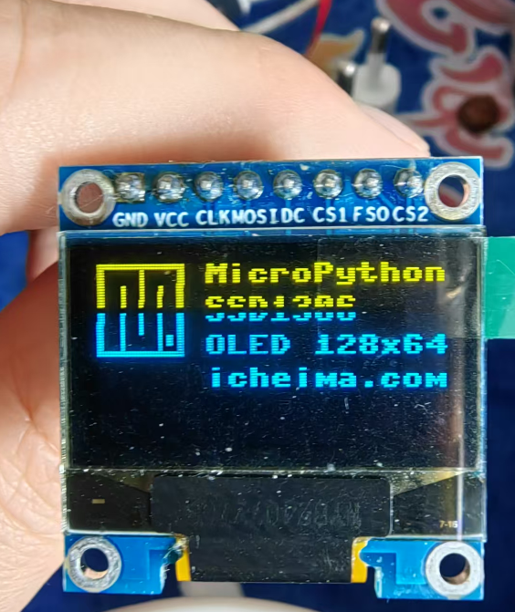
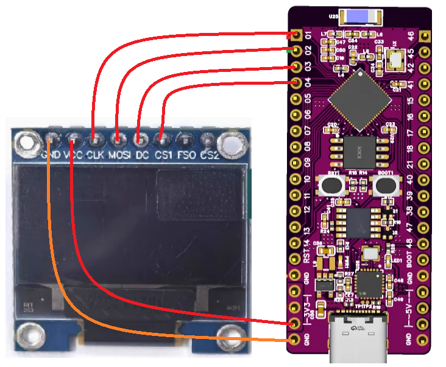

<!DOCTYPE lake>
<ol list="u3dcf094b"><li data-lake-id="ub5c293bc" fid="u21a2729d" id="ub5c293bc"><strong><span data-lake-id="ucf3b9051" id="ucf3b9051">什么是SPI？</span></strong><span data-lake-id="uf8988bda" id="uf8988bda"><br/>SPI（串行外设接口）是一种用于让电子设备之间快速通信的方式。想象一下你和朋友在一起玩一个“传递纸条”的游戏，主玩家（控制器）可以通过纸条告诉副玩家（其他设备）要做什么。SPI的作用就是帮助电子设备之间像这样快速、有效地传递信息。</span></li><li data-lake-id="u1dddcdfc" fid="u21a2729d" id="u1dddcdfc"><strong><span data-lake-id="u94f308e4" id="u94f308e4">SPI的基本工作原理</span></strong><span data-lake-id="ue1b4a2d7" id="ue1b4a2d7"><br/></span><span data-lake-id="uf9631eb1" id="uf9631eb1">在SPI通信中，有一个主设备和多个副设备。主设备负责发送信息，而副设备负责接收信息和发送回应。每次，主设备只能和一个副设备进行交流。</span></li></ol><p data-lake-id="ue065a522" id="ue065a522"><br/></p><ol list="u3dcf094b" start="3"><li data-lake-id="u889197fc" fid="u21a2729d" id="u889197fc"><strong><span data-lake-id="u5e3630f2" id="u5e3630f2">SPI的四根线</span></strong></li></ol><p data-lake-id="ua7996bd4" id="ua7996bd4"><span data-lake-id="ufeb8d86e" id="ufeb8d86e">SPI通信需要四根重要的线来帮助设备之间传递信息：</span></p><p data-lake-id="u24ea8496" id="u24ea8496"><span data-lake-id="u267d0602" id="u267d0602">​</span><br/></p><p data-lake-id="uef72d8f3" id="uef72d8f3"><strong><span data-lake-id="ufd884f3b" id="ufd884f3b">MOSI线（主设备输出，副设备输入）</span></strong><span data-lake-id="u71582207" id="u71582207">：这是用来传递信息的线。主设备把信息通过这根线发给副设备，就像主玩家把纸条传给副玩家。</span></p><p data-lake-id="uff430642" id="uff430642"><strong><span data-lake-id="u5ae4b638" id="u5ae4b638">MISO线（主设备输入,  副设备输出）</span></strong><span data-lake-id="u6f11c381" id="u6f11c381">：这是副设备用来回应主设备的线。副设备把回应通过这根线传回主设备。</span></p><p data-lake-id="u47affcff" id="u47affcff"><strong><span data-lake-id="u66eb961f" id="u66eb961f">SCK线（时钟线）</span></strong><span data-lake-id="u6f4cc492" id="u6f4cc492">：这根线就像游戏中的节拍器，帮助协调传递信息的节奏，确保信息的顺利传递。它告诉设备们什么时候该发送信息。</span></p><p data-lake-id="u5d2fa4e1" id="u5d2fa4e1"><strong><span data-lake-id="uce66c4d4" id="uce66c4d4">SS线（选择线）</span></strong><span data-lake-id="u0aee9c5d" id="u0aee9c5d">：这根线用来选择哪个副设备在说话。主设备通过将某个副设备的SS线设置为低电平，告诉它：“现在是你说话的时间！”每次只能选择一个副设备。</span></p><p data-lake-id="ua552f8b8" id="ua552f8b8"><span data-lake-id="u4ab7f125" id="u4ab7f125">​</span><br/></p><ol list="u8dae0a94" start="4"><li data-lake-id="u4f364356" fid="u13955634" id="u4f364356"><strong><span data-lake-id="u9daf9276" id="u9daf9276">SPI的工作流程</span></strong><span data-lake-id="ua4a1e74c" id="ua4a1e74c"><br/></span><span data-lake-id="u7a609eaf" id="u7a609eaf">选择设备：主设备通过SS线选择一个副设备，准备进行通信。</span></li></ol><p data-lake-id="u0fbbb27b" id="u0fbbb27b"><span data-lake-id="u7d8f9822" id="u7d8f9822">发送信息：主设备通过MOSI线将信息发送给副设备。</span></p><p data-lake-id="u21eab2d4" id="u21eab2d4"><span data-lake-id="u4aed702b" id="u4aed702b">接收回应：副设备通过MISO线将回应信息传回主设备。</span></p><p data-lake-id="u4f6a883c" id="u4f6a883c"><span data-lake-id="ue4d33bec" id="ue4d33bec">时钟信号：SCK线不断发送时钟信号，确保信息在正确的时机传递。</span></p><p data-lake-id="u6f05e2e4" id="u6f05e2e4"><span data-lake-id="u1742e217" id="u1742e217">​</span><br/></p><ol list="u8dae0a94" start="5"><li data-lake-id="ua4c0f5d8" fid="u13955634" id="ua4c0f5d8"><strong><span data-lake-id="ucb09ff2b" id="ucb09ff2b">生活中的例子</span></strong><span data-lake-id="u841e6ec1" id="u841e6ec1"><br/></span><span data-lake-id="u176a6f0c" id="u176a6f0c">想象一下，你在家里用遥控器控制电视。遥控器就是主设备，它通过SPI把指令（比如调高音量）发送给电视（副设备）。每次你按下一个按钮，遥控器会通过MOSI线把信息发送给电视，然后电视会通过MISO线把确认信息返回给遥控器。</span></li><li data-lake-id="ue02750b2" fid="u13955634" id="ue02750b2"><strong><span data-lake-id="u627449c7" id="u627449c7">总结</span></strong><span data-lake-id="u62cb2aef" id="u62cb2aef"><br/></span><span data-lake-id="u4592b70a" id="u4592b70a">SPI是一种帮助电子设备快速传递信息的通信方式。通过四根线（MOSI、MISO、SCK和SS），主设备能够有效地与多个副设备交流。这种快速的交流方式让很多电子产品（如电视、传感器和机器人）能够高效地工作。</span></li></ol><p data-lake-id="u58d911b8" id="u58d911b8"><span data-lake-id="uf10e8e1c" id="uf10e8e1c">​</span><br/></p><p data-lake-id="u01118b0f" id="u01118b0f"><span data-lake-id="u9d75d330" id="u9d75d330">​</span><br/></p><h2 data-lake-id="K2fSs" id="K2fSs"><span data-lake-id="u933e4a35" id="u933e4a35">点亮SPI屏幕</span></h2><p data-lake-id="u3f848809" id="u3f848809"><br/></p><a class="yuque-card-link" href="https://player.bilibili.com/player.html?bvid=BV1choKYKEb4&amp;autoplay=0" rel="noopener noreferrer" target="_blank">thirdparty：thirdparty</a><p data-lake-id="u140e7688" id="u140e7688" style="text-align: center"></p><p data-lake-id="uf13551d8" id="uf13551d8"><span data-lake-id="u130f58c8" id="u130f58c8">参考文档：</span><a data-lake-id="ub99a22fd" href="https://docs.micropython.org/en/latest/esp32/quickref.html#software-spi-bus" id="ub99a22fd" rel="noopener noreferrer" target="_blank"><span data-lake-id="u0afd0424" id="u0afd0424">https://docs.micropython.org/en/latest/esp32/quickref.html#software-spi-bus</span></a></p><p data-lake-id="u18e2e1f6" id="u18e2e1f6"><span data-lake-id="u04980633" id="u04980633">​</span><br/></p><h2 data-lake-id="nNOVv" id="nNOVv"><span data-lake-id="ub49dba82" id="ub49dba82">实现步骤</span></h2><h3 data-lake-id="JhqWZ" data-lake-index-type="2" id="JhqWZ"><span data-lake-id="u1938b0a6" id="u1938b0a6">按照如图接线</span></h3><p data-lake-id="u8c2f4cba" id="u8c2f4cba" style="text-align: center"></p><p data-lake-id="uca9481a9" id="uca9481a9"><span data-lake-id="ud69cd507" id="ud69cd507">接线顺序：</span></p><p data-lake-id="u587beaa8" id="u587beaa8"><span data-lake-id="uf361d5cd" id="uf361d5cd">gnd---gnd</span></p><p data-lake-id="u54340fb1" id="u54340fb1"><span data-lake-id="u171e5d88" id="u171e5d88">3v3 --- vcc</span></p><p data-lake-id="u60f4fbb4" id="u60f4fbb4"><span data-lake-id="u64e685a5" id="u64e685a5">1---sck</span></p><p data-lake-id="u5d8421e5" id="u5d8421e5"><span data-lake-id="u33752ec4" id="u33752ec4">2---mosi</span></p><p data-lake-id="u24f3a4ec" id="u24f3a4ec"><span data-lake-id="uf6161d97" id="uf6161d97">3---dc</span></p><p data-lake-id="udc723bba" id="udc723bba"><span data-lake-id="u2ab47bd2" id="u2ab47bd2">4---cs</span></p><h3 data-lake-id="C39W9" data-lake-index-type="2" id="C39W9"><span data-lake-id="u7f2ac365" id="u7f2ac365">导包</span></h3><span class="yuque-card-unsupported">[codeblock]</span><h3 data-lake-id="XeVF4" data-lake-index-type="2" id="XeVF4"><span data-lake-id="uf2ce84ab" id="uf2ce84ab">初始化SoftSPI</span></h3><span class="yuque-card-unsupported">[codeblock]</span><h3 data-lake-id="jV1SG" data-lake-index-type="2" id="jV1SG"><span data-lake-id="u0afd37ed" id="u0afd37ed">初始化SSD1306_SPI</span></h3><span class="yuque-card-unsupported">[codeblock]</span><h3 data-lake-id="ZOIxU" data-lake-index-type="2" id="ZOIxU"><span data-lake-id="u883d17d3" id="u883d17d3">绘制图形</span></h3><span class="yuque-card-unsupported">[codeblock]</span><h3 data-lake-id="f6iUX" data-lake-index-type="2" id="f6iUX"><span data-lake-id="u33994ac2" id="u33994ac2">刷新屏幕</span></h3><span class="yuque-card-unsupported">[codeblock]</span>